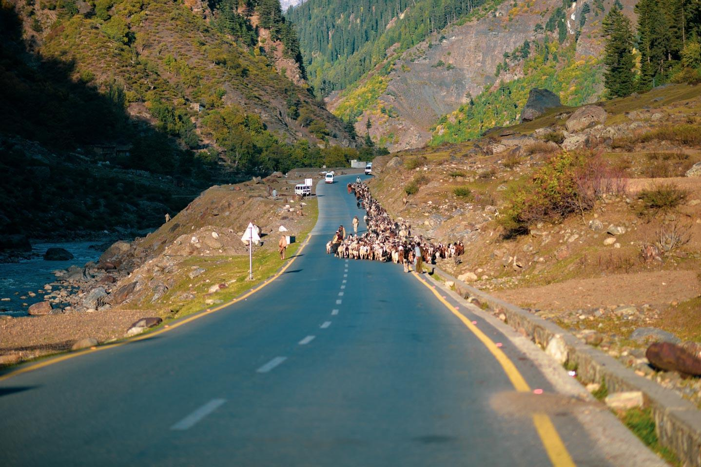

At the northern end of the Kaghan Valley in the Mansehra district of Khyber Pakhtunkhwa, there lies a mountainous lake called Saiful Mulook. At an elevation of 3,224 meters above sea level, this lake is one of the highest lakes in Pakistan.

With its majestic self, this lake carries a lot of interesting mystical tales of fairies and princes because of its undefined beauty. Saif ul Malook was formed in the greater Pleistocene Period, almost 300,000 years back. Because of rising temperatures and receding glaciers, the melted water was gathered in a large depression where the glacier once stood.
Jheel Saiful Malook is mostly accessible during summer, which is from May to mid-September. The weather in these months remains pleasant. However, the access during winter is limited as heavy snowfall and landslides threaten to segregate the lake from other regions.
The journey to the lake starts from the capital city of Pakistan – Islamabad. From there, one can either opt for the local transport on a tiny budget or choose to travel privately. Expediting the journey on Hazara Motorway, one will reach Mansehra city from Abbottabad. From the city of Mansehra, one has to take the Naran-Babusar top road, which leads straight to the valley of Naran Kaghan via Balakot. After reaching the Naran valley, tourists can visit Saif ul Malook by a thrilling hike or a 30-minute adventurous and curvy jeep ride
Popular as one of the most beautiful tourist attractions in the world, Lake Saiful Malook has left many travelers speechless. It has rich eco-diversity and carries many species of blue-green algae, giving the lake its turquoise hue.Lying in the mighty shadows of Malika Parbat, tales have it that the depth of the lake remains unknown to date. However, research shows that the depth of Lake Saif ul Malook is around 34 meters (113 ft), and it covers 2.75 km square of surface area. The water temperature of the lake remains below 10 degrees as it mostly receives glacial waters. Large brown trout are found in the icy waters of the Jheel.